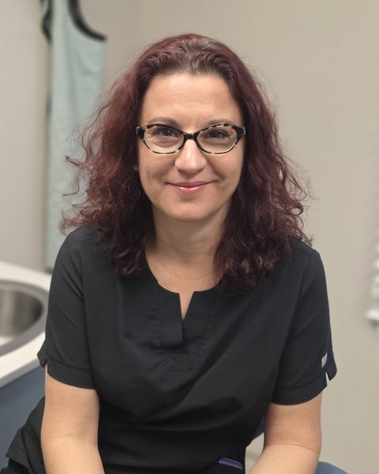

Marija Mintz
Dental Assistant
Marija joined our practice in 2016. She was born and raised in Macedonia where she attended dental school. She graduated from AB-Tech’s Dental Assisting program in 2006 and has been a dental assistant ever since. Being able to interact, educate, and comfort patients is the most rewarding experience to her. Marija has two boys and enjoys spending time with family and friends, cooking, traveling and outdoor activities — especially when it is warm!